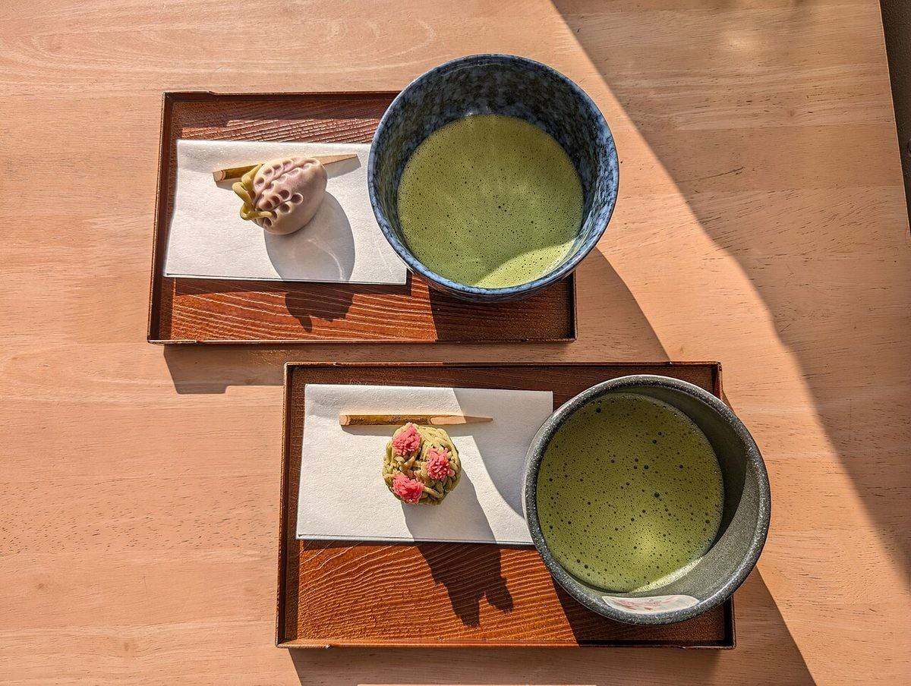

40代・女性(匿名)
訪問先への手土産に、季節の詰め合わせをお願いしました。包みが上品で、箱を開けたときの彩りにも気持ちが和みました。甘さも控えめで、年配の方にも喜んでいただけました。
利用シーン: 手土産
写真・店舗名・内容はすべて見本用の架空のものです
以下は見本用のイメージ例です。実際のお客様の声ではありません。

40代・女性(匿名)
訪問先への手土産に、季節の詰め合わせをお願いしました。包みが上品で、箱を開けたときの彩りにも気持ちが和みました。甘さも控えめで、年配の方にも喜んでいただけました。
利用シーン: 手土産
60代・男性(匿名)
散歩の途中で立ち寄り、上生菓子をいただきました。縁台でお茶と一緒に味わうと、季節の移ろいを感じます。月が替わるたびに、のぞくのが楽しみです。
利用シーン: 季節の菓子
30代・ご家族(匿名)
お世話になった方へのお使い物に、どら焼きと羊羹を選びました。のしの相談にも丁寧に応じていただき、安心してお渡しできました。子どもたちは粒あんのどら焼きを喜んでいました。
利用シーン: お使い物
ご予約・お問い合わせ
000-0000-0000